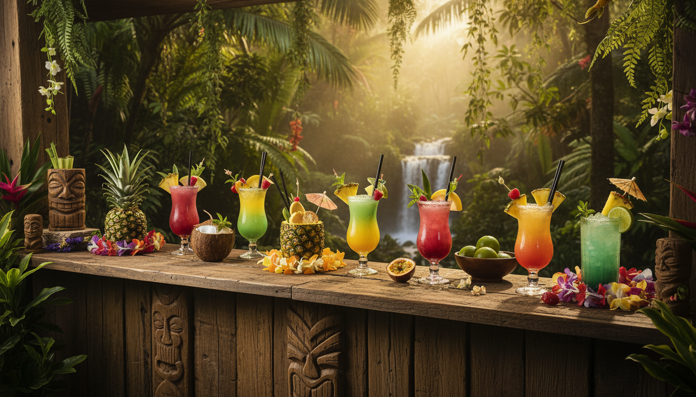

Investigación: Cocktail Bars & Lounges en La Fortuna

Para: Noches en La Fortuna (Lun 24 - Mar 25 Noviembre)
📋 Información Clave
Se identificaron 7 establecimientos principales especializados en cocktails y bebidas en el área de La Fortuna/Arenal:
- Voodoo Bar & Cocktails - Cocktails creativos, ambiente moderno
- Lava Lounge Bar & Grill - Clásico de La Fortuna, mezcla internacional
- Jungle Love Lounge - El Castillo (15 min de La Fortuna), vistas espectaculares
- Bar Patrón Costa Rica - Bar oficial Tequila Patrón, cocktails premium
- La Fortuna Pub - Enfoque en craft beer, también cocktails
- Nanku Restaurant - Tropical bar & grill, cocktails tiki
- Chicha's Restaurant & Lounge Bar - Sur de La Fortuna, vista volcán
Rango de precios: $$ (Moderado) Mejores para cocktails: Voodoo Bar, Bar Patrón, Jungle Love Lounge Mejores para ambiente: Jungle Love Lounge (vistas), Lava Lounge (música en vivo)
🍹 DETALLES POR ESTABLECIMIENTO
1. VOODOO BAR & COCKTAILS ⭐
Ubicación: 📍 Mercadito Arenal, Road 142, La Fortuna 📍 700m oeste del Parque de La Fortuna
Horarios: 🕐 Lunes, Miércoles-Domingo: 12:00 PM - 10:45 PM 🚫 Cerrado los Martes
Redes Sociales: - 📸 Instagram: @voodoo_barcr (5,770 seguidores) - 🌐 Website: voodoobarcr.com - 📧 Email: hello@voodoobarcr.com
Especialidades: - Cocktails creativos con ingredientes únicos (moras, jalapeños, flor de jamaica) - Cocktail destacado: Cocojito - Black Zombie (muy recomendado por visitantes) - Smoothies naturales sin alcohol - Cerveza artesanal
Precio: $$ (Moderado)
Ambiente: Bar moderno con temática de "magia" y "vudú", enfoque en mixología creativa
Estacionamiento: ✅ Disponible en Mercadito Arenal
Recomendación: ⭐⭐⭐⭐⭐ Excelente para cocktails creativos y únicos
2. LAVA LOUNGE BAR & GRILL ⭐
Ubicación: 📍 Fortuna Central Main Road to Volcano Arenal 📍 25 metros oeste de la Iglesia Católica, La Fortuna
Horarios: 🕐 Domingo-Sábado: 11:00 AM - 11:00 PM
Redes Sociales: - 📸 Instagram: @lavaloungecr (1,170 seguidores) - 🌐 Website: lavaloungecostarica.com - 📞 Teléfono: +506 2479 7365 - 📞 Reservas: +506 7052 9251 - 📧 Email: info@lavaloungecostarica.com - 📘 Facebook: lavaloungecostarica
Especialidades: - Craft cocktails - Comida: Nachos, quesadillas, wings, wraps - Casado costarricense - Chuleta de cerdo a la parrilla - Camarones al coco con salsa de mango picante
Precio: $$ (Moderado)
Ambiente: Decoración ecléctica, ambiente amigable, influencia californiana con estilo Tico. Música en vivo especialmente en temporada alta
Estacionamiento: ✅ Disponible
Recomendación: ⭐⭐⭐⭐ Clásico de La Fortuna, excelente para comida + bebidas + música en vivo
3. JUNGLE LOVE LOUNGE ⭐⭐⭐
Ubicación: 📍 El Castillo de Fortuna (15 minutos de La Fortuna) 📍 Via Nepenthe B&B Resort, Alajuela Province
Horarios: 🕐 Mejor hora para reservar: 5:00 PM (para ver atardecer) ⚠️ No tienen menú fijo - depende de ingredientes frescos del día
Redes Sociales: - 📸 Instagram: @jungleloveloungecr - 🌐 Website: junglelovelounge.com - 📘 Facebook: Jungle Love Lounge
Especialidades: - Craft cocktails cuidadosamente elaborados - Lista de vinos más grande del área - Pizzas de masa madre - Steaks, ceviche, pollo, barbecue - Variedad de postres
Precio: $$-$$$ (Moderado-Alto)
Ambiente: 🌋 Vistas ESPECTACULARES de 5 volcanes sobre Lago Arenal 🌿 Ambiente artístico, setting tranquilo 🎮 Juegos indoor/outdoor, instrumentos musicales 📶 Internet Starlink para trabajo remoto 🌱 Cultivan sus propias hierbas en invernadero
Estacionamiento: ✅ Disponible (15 min drive desde La Fortuna)
Consideraciones: ⚠️ Requiere 15 min de manejo desde La Fortuna (con vehículos propios) ⚠️ No tienen menú fijo
Recomendación: ⭐⭐⭐⭐⭐ ALTAMENTE RECOMENDADO para cocktails premium + vistas únicas + atardecer. Popular en Instagram/TikTok.
4. BAR PATRÓN COSTA RICA ⭐
Ubicación: 📍 Ruta Nacional Secundaria 142 📍 700 metros noroeste del Parque, Arenal Volcano National Park
Horarios: 🕐 Todos los días: 10:00 AM - 11:00 PM
Redes Sociales: - 📸 Instagram: @barpatroncostarica (2,669 seguidores) - 🌐 Website: barpatroncr.com (actualmente con problemas técnicos) - 📘 Facebook: Bar Patron Costa Rica
Especialidades: - Bar oficial de Tequila Patrón - Cocktails innovadores con sabores costarricenses - Cocktail destacado: Volcano Margarita - Mojitos clásicos y cocktails signature - Cervezas locales y vinos
Comida: - Salmon, carnes premium - Pizzas artesanales - Ceviches
Precio: $$-$$$ (Moderado-Alto)
Ambiente: Moderno y tropical, área de asientos al aire libre, ambiente poolside
Estacionamiento: ✅ Disponible
Recomendación: ⭐⭐⭐⭐⭐ Excelente para tequila y cocktails premium, ambiente moderno
5. LA FORTUNA PUB 🍺
Ubicación: 📍 Lado alto del pueblo (upper side of town) 📍 350 metros oeste de la Iglesia Católica
Horarios: 🕐 Todos los días: 12:00 PM - tarde/noche
Redes Sociales: - 📸 Instagram: @lafortunapub (4,083 seguidores) - 🌐 Website: lafortunapub.com - 📞 Teléfono: +506 8328 8080 - 📧 Email: marias@lafortunapub.com - 📘 Facebook: lafortunapub (6,828 likes)
Especialidades: - CRAFT BEER - Amplia variedad de cervezas artesanales - Volcano IPA (cerveza de la casa) - Cervezas locales e importadas (Stone Brewing USA) - También sirven cocktails - Comida estilo pub
Precio: $$ (Moderado)
Ambiente: Primer pub en la base del Volcán Arenal. Decoración rústica tipo pub. 🎵 Música en vivo 🎯 Trivia nights 🎲 Juegos de bar (Jenga, Cornhole)
Estacionamiento: ✅ Amplio estacionamiento (raro en La Fortuna)
Recomendación: ⭐⭐⭐⭐ Mejor opción para craft beer. También bueno para cocktails en ambiente casual.
6. NANKU RESTAURANT - TROPICAL BAR & GRILL
Ubicación: 📍 Street 142, San Carlos, La Fortuna 📍 Una cuadra este del Parque de La Fortuna
Horarios: ⚠️ No especificados en búsqueda
Redes Sociales: - 📸 Instagram: @restaurantenanku - 🌐 Website: restaurantenanku.net - 📞 Teléfono: +506 2479 0707 - 📧 Email: info@restaurantenanku.com - 📘 Facebook: RestauranteNanku
Especialidades: - Tropical bar & grill - Cocktails tiki - Comida típica costarricense - Carnes y mariscos de alta calidad - Ingredientes locales frescos
Precio: $$ (Moderado)
Ambiente: "Local Ingredients, International Flavor" 🎵 Música en vivo 👨👩👧👦 Ideal para familia y amigos 🌴 Mejor tropical bar and grill en La Fortuna
Estacionamiento: ✅ Disponible (una cuadra del parque)
Recomendación: ⭐⭐⭐⭐ Excelente para cocktails tiki y comida costarricense. Ranking #20 de 269 restaurantes en La Fortuna (Tripadvisor).
7. CHICHA'S RESTAURANT & LOUNGE BAR
Ubicación: 📍 F9C5+PW2, C. 460, Provincia de Alajuela, La Fortuna 📍 50 metros oeste de La Cristalina Pump 📍 Sur de La Fortuna (15 minutos en auto desde el centro)
Horarios: 🕐 11:00 AM - 2:30 AM
Redes Sociales: - 📘 Facebook: Chichas Restaurante Sport Bar - 📞 Teléfono: +506 6191 5119 - ⚠️ Instagram: No encontrado
Especialidades: - Cocktails - Happy hour - Ceviche, hamburguesas - Comida costarricense
Precio: $$ (Moderado)
Ambiente: 🌴 Setting al aire libre en área de selva 🌋 Vistas del Volcán Arenal 🦥 Posibilidad de ver vida silvestre (perezosos, monos) 🍺 También funciona como Sport Bar
Estacionamiento: ✅ Disponible (zona rural)
Consideraciones: ⚠️ 15 minutos drive desde centro de La Fortuna ⚠️ Horarios extendidos hasta 2:30 AM
Recomendación: ⭐⭐⭐ Buena opción para cocktails + vista volcán + vida silvestre. Requiere vehículos propios.
📊 COMPARACIÓN RÁPIDA
| Bar/Lounge | Ubicación | Horarios | Especialidad | Redes Sociales | Parking |
|---|---|---|---|---|---|
| Voodoo Bar | Centro La Fortuna | 12PM-10:45PM (cerrado Mar) | Cocktails creativos | IG, Web, Email | ✅ |
| Lava Lounge | Centro La Fortuna | 11AM-11PM | Bar & Grill, música vivo | IG, Web, FB, Tel | ✅ |
| Jungle Love | El Castillo (15min) | 5PM+ (sunset) | Vistas 5 volcanes, wine | IG, Web, FB | ✅ |
| Bar Patrón | 700m del Parque | 10AM-11PM | Tequila, cocktails premium | IG, FB | ✅ |
| La Fortuna Pub | Upper town | 12PM-tarde | Craft beer + cocktails | IG, Web, FB, Tel | ✅✅ |
| Nanku | 1 cuadra del parque | No especificado | Tiki cocktails, Tico food | IG, Web, FB, Tel | ✅ |
| Chicha's | Sur (15min drive) | 11AM-2:30AM | Vista volcán, wildlife | FB, Tel | ✅ |
🎯 RECOMENDACIONES SEGÚN PREFERENCIA
Para Cocktails Creativos:
- Voodoo Bar & Cocktails - Ingredientes únicos, ambiente moderno
- Bar Patrón - Cocktails premium, enfoque en tequila
- Jungle Love Lounge - Craft cocktails + vistas espectaculares
Para Ambiente y Vistas:
- Jungle Love Lounge - 5 volcanes + Lago Arenal (MEJOR VISTAS)
- Chicha's - Vista Volcán Arenal + vida silvestre
- Bar Patrón - Ambiente poolside moderno
Para Música en Vivo:
- Lava Lounge - Música en vivo frecuente (temporada alta)
- Nanku Restaurant - Música en vivo
- La Fortuna Pub - Live music + trivia nights
Para Craft Beer (no solo cocktails):
- La Fortuna Pub - Especializado en craft beer
Para Comida + Bebidas:
- Lava Lounge - Menú completo bar & grill
- Nanku - Comida costarricense + cocktails tiki
- Bar Patrón - Comida premium + cocktails
Por Cercanía a Casa Mañana (Airbnb La Fortuna):
- Voodoo Bar - Centro La Fortuna
- Lava Lounge - Centro La Fortuna
- La Fortuna Pub - Upper side del pueblo
🚗 CONSIDERACIONES CON VEHÍCULOS PROPIOS
✅ VENTAJAS: - Todos los establecimientos tienen estacionamiento - Pueden visitar Jungle Love Lounge en El Castillo (15 min) - Pueden ir a Chicha's al sur (15 min) - Flexibilidad de horarios
⚠️ CONSIDERACIONES: - Conductor designado necesario - Algunos lugares (Jungle Love, Chicha's) requieren 15 min drive - Carreteras en la noche pueden ser oscuras - Chicha's está abierto hasta 2:30 AM (horario extendido)
💡 SUGERENCIAS PARA EL GRUPO (10 PERSONAS)
Noche 1 (Lunes 24 - Llegada La Fortuna tarde):
NO RECOMENDADO - Llegarán ~9-10 PM cansados del viaje
Noche 2 (Martes 25 - Después ATV y Cascada):
Opción A: Voodoo Bar (cerrado martes) ❌ Opción B: Lava Lounge ✅ - Centro La Fortuna, ambiente casual Opción C: La Fortuna Pub ✅ - Craft beer + cocktails, casual
Noche 3 (Miércoles 26 - Última noche La Fortuna):
Opción A: Jungle Love Lounge ✅✅ - EXPERIENCIA ESPECIAL (reservar 5 PM para sunset) Opción B: Bar Patrón ✅ - Cocktails premium Opción C: Voodoo Bar ✅ - Cocktails creativos
Notas para Grupo de 10:
- Considerar reservas anticipadas especialmente para Jungle Love Lounge
- Verificar si hay descuentos grupales
- 2 vehículos = coordinación entre conductores designados
- Grupo grande = ambiente más animado en cualquier bar
📱 RESUMEN DE CONTACTOS CLAVE
| Nombre | Teléfono | ||
|---|---|---|---|
| Voodoo Bar | - | hello@voodoobarcr.com | @voodoo_barcr |
| Lava Lounge | +506 2479 7365 | info@lavaloungecostarica.com | @lavaloungecr |
| Jungle Love | - | - | @jungleloveloungecr |
| Bar Patrón | - | - | @barpatroncostarica |
| La Fortuna Pub | +506 8328 8080 | marias@lafortunapub.com | @lafortunapub |
| Nanku | +506 2479 0707 | info@restaurantenanku.com | @restaurantenanku |
| Chicha's | +506 6191 5119 | - | (No encontrado) |